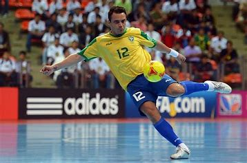
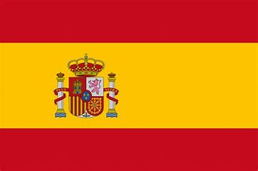

Meu nome é Maurício Eduardo Santos, tenho 18 anos e sou de Diadema, São Paulo. Sou cristão e sempre valorizei o aprendizado. Concluí o ensino médio recentemente e me formei no curso técnico de administração em 2024. Atualmente, trabalho como aprendiz administrativo na Vesúvio Artefatos de Borracha LTDA. Busco a transição para a área de tecnologia através da faculdade de Análise e Desenvolvimento de Sistemas (ADS), onde espero expandir meu conhecimento e construir uma carreira sólida. Estou gostando do curso, aprendendo bastante e enfrentando desafios que me motivam ainda mais. Acredito que a educação é fundamental para alcançar meus objetivos e estou determinado a me tornar um profissional excelente, reconhecido pelo meu esforço e dedicação.

| EUA | |
| Espanha |  |
| Japão |